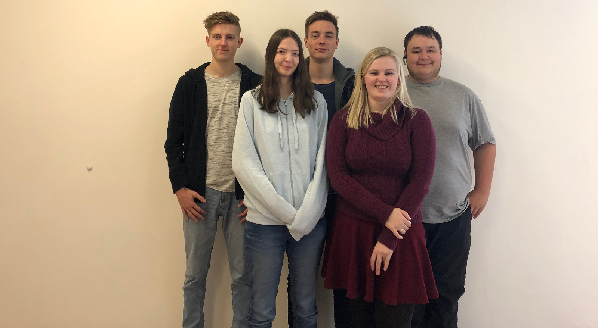

Aufgaben Verteilung: Grübl Alex und Höller Sindia haben die Schulwebsite wie auch die Firmen Website erstellt. Sascha Lentz war unser Schriftsführer, der die Protokolle mitgeschrieben hat und für die Powerpointpräsentationen zuständig war. Hammerer Christina und Waldhauser Patrick haben sich mit der Netzwerkstruktur und der Ausführung beschäftigt.